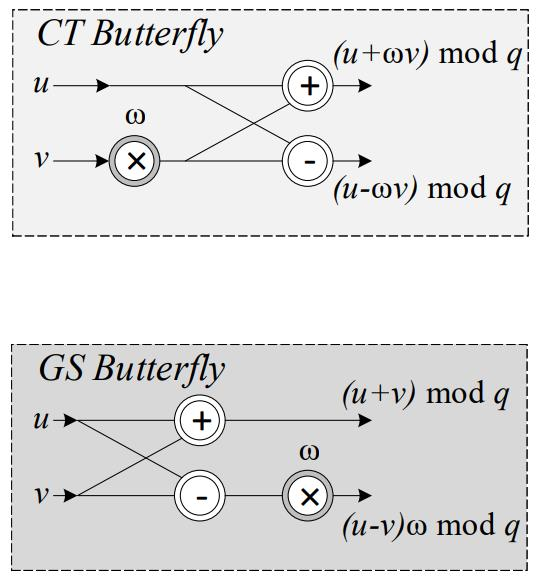
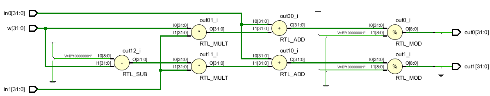
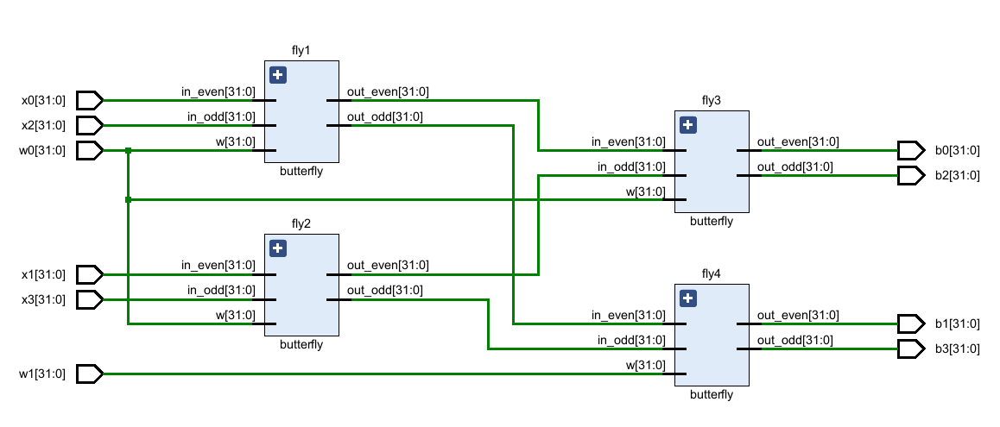
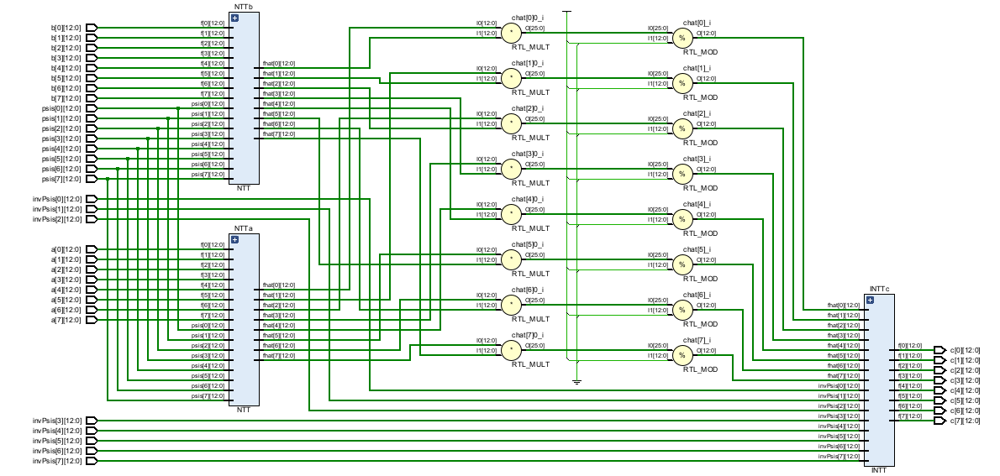
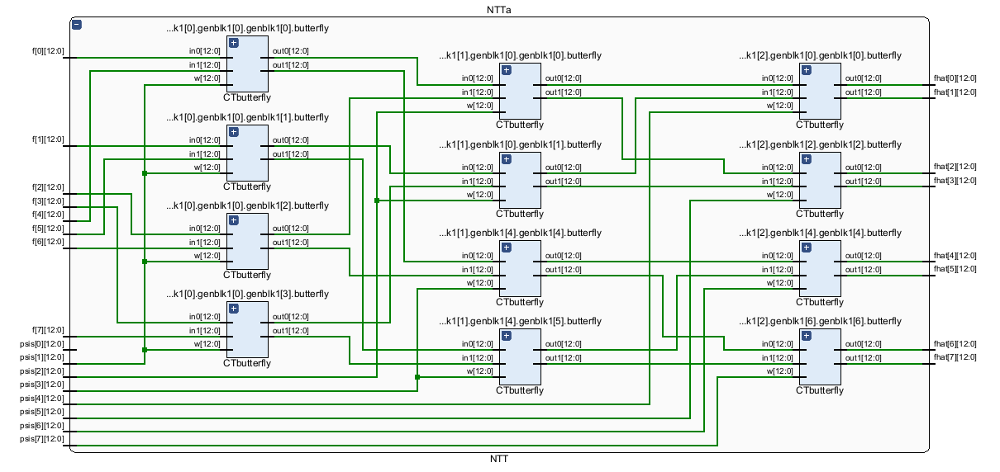
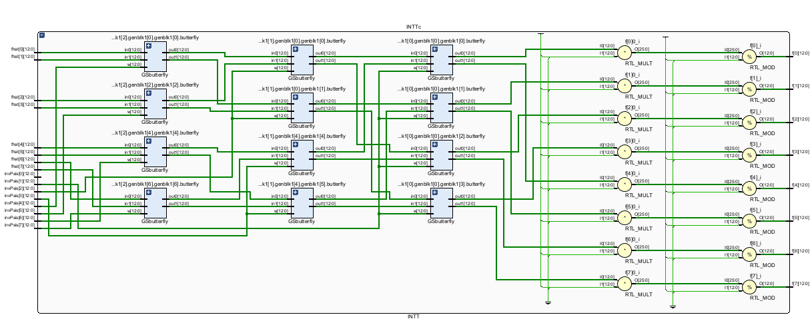

Design Workflow Diagram
Here is our design workflow diagram for the project. We need to build software implentations for verification. Then, we need to build the hardware design, using the NTT and other optimization methods.

Our design will utilize the NTT (Number Theoretic Transform) and other optimization methods to increase the speed and efficiency of the polynomial multiplication used in post-quantum cryptography algorithms.
Here is our design workflow diagram for the project. We need to build software implentations for verification. Then, we need to build the hardware design, using the NTT and other optimization methods.
The Number Theoretic Transform (NTT) is a very efficient method of performing polynomial multiplication by performing a discrete fourier transform over a polynomial ring. This reduces the number of individual multiplications that need to be performed.
The NTT transforms two polynomials to the frequency-domain, where they can be pointwise multiplied, and transformed back to the time-domain using the INTT, yielding the result of the polynomial multiplication. This transformation is optimized using a Fast-Fourier Transform (FFT) algorithm. The FFT uses the Cooley Tukey (CT) Butterfly algorithm for computing the NTT and the Gentleman-Sande (GS) Butterfly algorithm for computing the INTT.

The hardware design for the fast-NTT CT butterfly and the fast-NTT module, respectively. This schematic shows the 4-input fast-NTT, however, we can expand this to any size. Additionally, a slight modification to this design will yield the fast-INTT GT butterfly.


The hardware design for an NTT-based polynomial multiplier in Verilog/SystemVerilog. The design uses CRYSTALS-Kyber Version 2 parameters: n=256 and q=7681. The following schematics are the 8-input Polynomial Multiplier, NTT Module, and INTT module (8-bit is shown for easier visualization).


